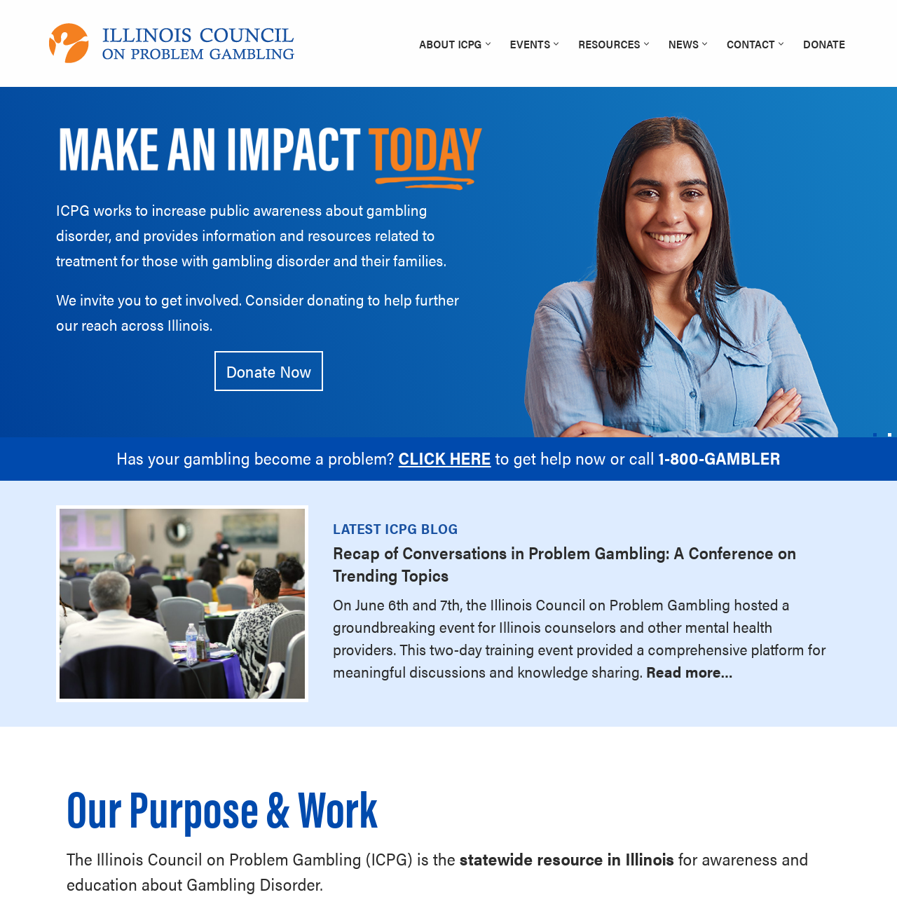

Illinois Council on Problem Gambling
Website, Branding

Illinois Council on Problem Gambling
Website, Branding
3Q/DEPT
Earned Media, Awards & Recognition
3Q/DEPT
Earned Media, Awards & Recognition
Marketers Must Balance Media Mix to Collapse Brand and Performance Silos
AdWeek
Carlyle-backed Dept just made its biggest acquisition to date as it races to become the leading digital ad agency
Business Insider
For brands, the silver lining of signal loss is the opportunity to build trust
The Drum
Rethinking the brand-customer bond in a digital world
Fast Company
3Q/DEPT Named Top Employer By Quartz, Crain’s Chicago Business
Quartz, Crain’s Chicago Business